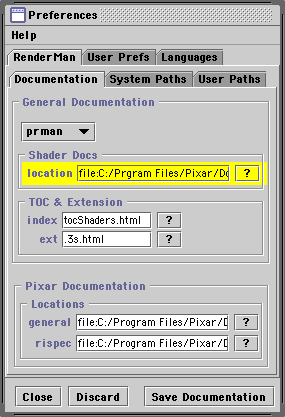
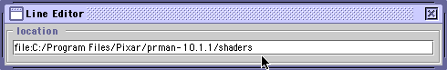
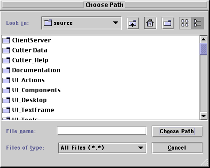

Cutter Help
The Preferences Tool
[return to index]
- Contents
- Overview
- Discard & Saving Edits
Overview
The Preferences Tool controls most of Cutters settings.
Some preferences, however, are controlled directly by the various Cutter
Tool palettes. For example, the Rman Tools has a Preferences panel
that enables users to control several aspects of the rendering/compiling
process without the need to interact with the preferences tool as such.

The RenderMan Documentation panel shown above
will serve as an example of how to interact with the Preferences Tool.
An item common to most of the preference panels is shown hilited
in yellow. It consists of a labelled text field and an accompanying
search button. Such items will require you to identify either,
1 the full path of a file, such as a "bin" directory,
2 the name of a file, such as an executible, or
3 the extension of a file, such as ".html"
A text field can be either edited directly or, alternatively,
a path, file or extension can be found using the search button.
Double-click on a text field to open a Line Editor window

Clicking on the search button [?] will cause a Choose Path
window to be displayed ie.

After clicking in the "Choose Path" button the appropriate text
will be inserted into the text field. Cutter will extract the
information it requires from the selection you have made.
Discard Edits
As each preferences panel is edited changes made to the items
in the panel may be either discarded or saved. In particular
note that using the Discard button ONLY effects the current
preferences panel. As each panel is choosen, via the tabs at the
top of the tool, the title of the Save button will indicate
which panel will be saved.
Preference panels must be explicitly saved
after their items have been edited.
|